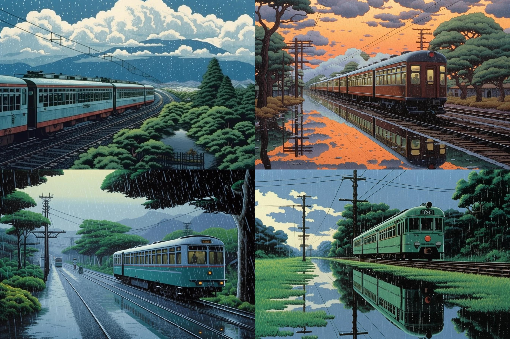
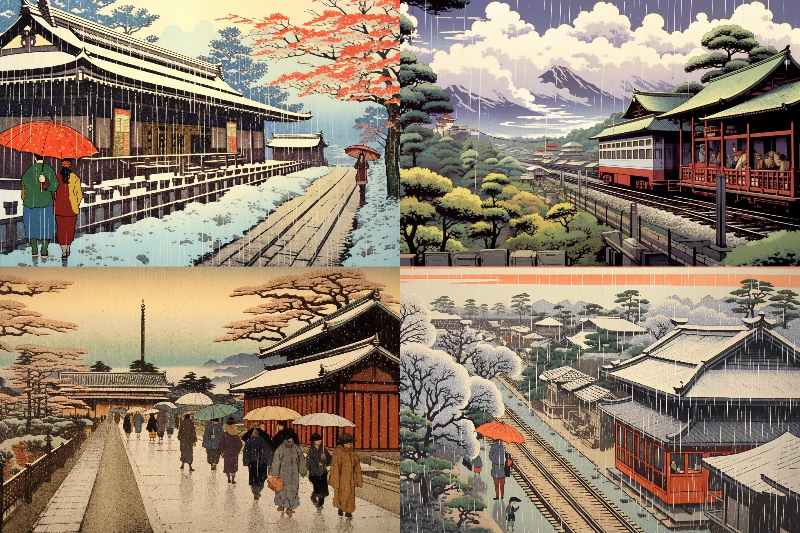
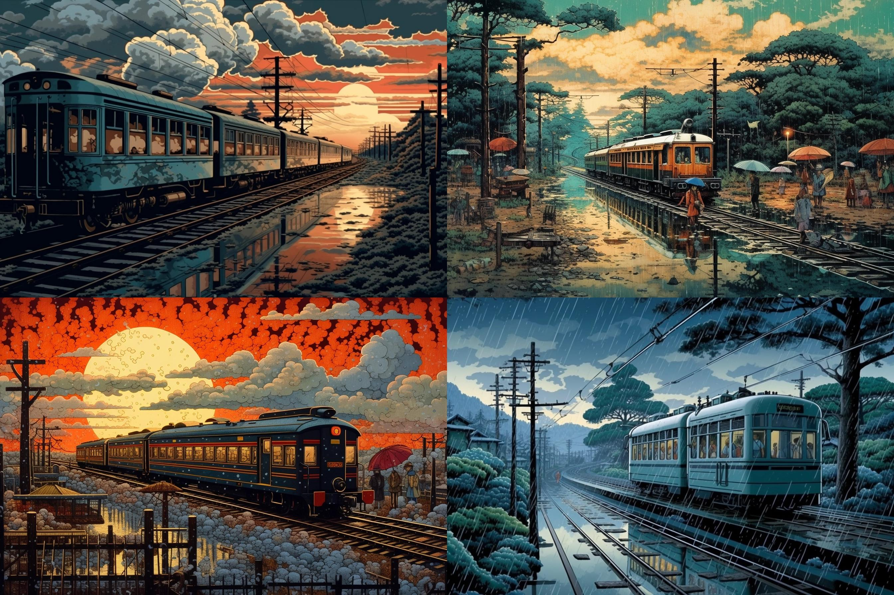

| Gambar |
|---|
|  |
| after rain train, hasui kawase --ar 3:2 --seed 678 --s 750 |
|  |
|
ChatGPT 3.5: after rain train , Fusion of traditional Japanese ukiyo-e and Western art techniques Depiction of serene landscapes and natural beauty of Japan Skillful use of light, color, and texture to create atmosphere and mood Meticulous attention to detail, particularly in architectural elements Subdued and balanced compositions with a sense of harmony Delicate and harmonious color palette Unique blend of traditional and modern influences Celebration of nature and a contemplative mood --ar 3:2 --seed 678 --s 750 --v 5.1 |
|  |
|
ChatGPT 4: after rain train, style similar to Ukiyo-e prints, Shin-hanga Style, andscapes that are intricately detailed, istinct atmospheric mood, rich palette to depict different times of day, weather conditions, and seasons --ar 3:2 --seed 678 --s 750 --v 5.1 |